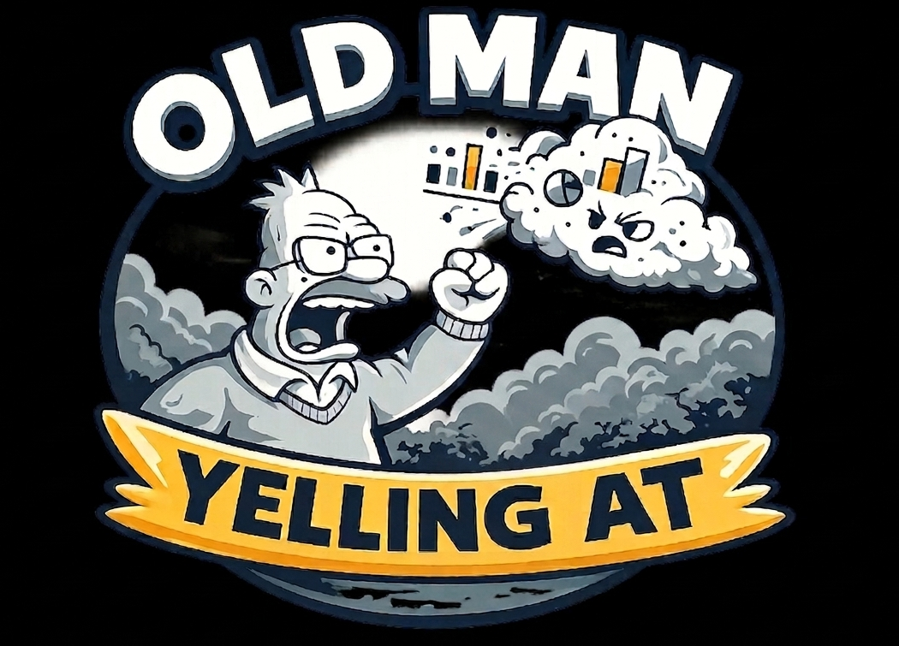

I turn messy, broken, lying data into dashboards that people actually use — and then yell about the ones they don't. With a background spanning SQL, Python, hardware, and the full data stack, I build things from the database up.
My specialty is finding the question nobody asked that explains everything. Also yelling at clouds. Figuratively. Mostly.
Currently experimenting with LLMs to see if I can outsource the yelling. Results: inconclusive. The LLM is too polite.
Got bad data? Boring dashboards? A plane flying over your house at 6am?
I have opinions about all of it.
Drop me a line and let's make something worth yelling about.